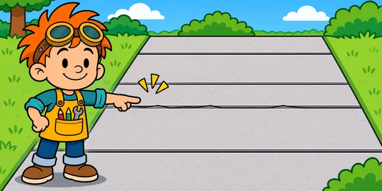
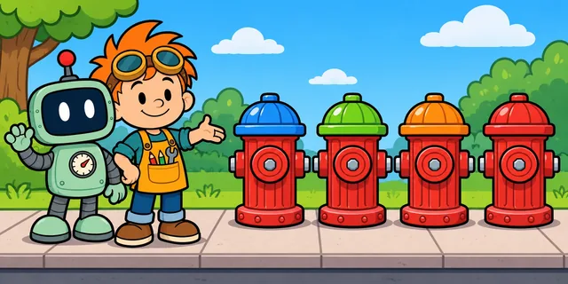

Why are airplane windows round?
Square windows would show more sky. So why does every airplane have round ones?

Tiny questions. Brilliant answers. A little chaos.

Check out our newest mystery! Watch, learn, and discover something surprising.
Square windows would show more sky. So why does every airplane have round ones?
Pick a topic, follow your curiosity, and see how the world works!
 ShortsTue Nov 3
ShortsTue Nov 3Woodpeckers bang their heads into trees thousands of times a day. How is their brain okay?
 ShortsWed Nov 4
ShortsWed Nov 4Look closely at an airplane window and you'll find a tiny hole. Fitz wants to plug it. Should he?
 ShortsThu Nov 5
ShortsThu Nov 5Fitz wants a round stop sign. Gauge wants to know: is round already taken?
 ShortsFri Nov 6
ShortsFri Nov 6Gauge wants to seal that “pointless” hole for fresher ink. Fitz says not so fast.
 ShortsSat Nov 7
ShortsSat Nov 7Piles of rocks look messy. Gauge wants to lay the tracks on plain dirt. Will dirt hold?
 ShortsSun Nov 8
ShortsSun Nov 8Those ka-thunk gaps are annoying, so Gauge wants to fill them in. What are they for?
 Case FilesSun Nov 8
Case FilesSun Nov 8Case Files: a 59-story tower on stilts, a hidden weakness, and welders working through the night. Gauge has red string. Lots of it.
 ShortsMon Nov 9
ShortsMon Nov 9Those little gaps at the bottom of brick walls look like a mistake. Gauge wants to seal them. Should he?
 ShortsTue Nov 10
ShortsTue Nov 10Bees build their honeycomb out of hexagons. Gauge thinks circles would be better. Why six sides?
 ShortsWed Nov 11
ShortsWed Nov 11Birds sit on live wires all day. Gauge wants to give them rubber boots. Do they need them?
 ShortsThu Nov 12
ShortsThu Nov 12Two keys on every keyboard have tiny bumps. Gauge wants to sand them off. What are they for?
 ShortsFri Nov 13
ShortsFri Nov 13Some towers hang a giant ball near the top. Gauge wants to cut it out. Why is it there?
 ShortsSat Nov 14
ShortsSat Nov 14Gauge wants a square manhole cover to match the paving. Is round just tradition?
Many jet engines have a white spiral in the middle. Gauge wants to paint it plain. What's it for?

ShortsMon Nov 16Sidewalks are covered in straight grooves. Gauge wants to smooth them over. Why are they there?
A falling cat flips right side up in midair. Gauge thinks it pushed off something. Did it?
Some plugs have a round third prong. Gauge wants to snip it off. What does it do?
There's a little hole near the top of most bathroom sinks. Gauge wants to plug it. What's it for?
Revolving doors are slow. Gauge wants a normal door instead. Why do tall buildings use them?
Many airplane wings bend up at the tips. Gauge wants to straighten them. What do they do?
Some roads have grooves cut into them. Gauge wants to pave them smooth. Should he?

ShortsMon Nov 23Hydrant caps come in different colors. Gauge wants them all the same. Are the colors a code?
Geckos walk up glass. Gauge is sure they use suction cups. Do they?
Most wind turbines have three blades. Gauge wants to add more. Would that help?
There's a tiny arrow next to the fuel gauge. Gauge wants to scrape it off. What does it point to?
Office ceiling tiles are full of tiny holes. Gauge wants to fill them in. What are they for?
Big ships have a round bump under the waterline at the front. Gauge wants to cut it off. Why is it there?
Some road lines have little raised bumps on them. Gauge wants to scrape them off. What are they for?
Fitz and Gauge are cartoons, but the answers aren't made up.
Every episode starts from something you can actually see in the world, and answers just that.
Government agencies, universities, manufacturers and peer-reviewed research. The gags can be silly; the facts can't.
Every episode lists its sources, each with the claim it supports. Start with the latest mystery's sources.
Fitz has big ideas, asks even bigger questions, and loves figuring out how things work!
Gauge is super curious, full of fun facts, and always ready to explore, build, and discover!